The Meter
Before Black Friday, a candle maker's email bill turns into a taxi meter that ticks on every signup, even the ones who never open. She unscrews it, leaves it on the curb and gets into a ride that only charges when she sends, and signs up before the Black Friday deal drops.
45.0 s with the outro · 68 words of dialogue · 3 generation units · estimated $28.65
Rule check
Open issues
- none
Warnings
- none
Contact sheet
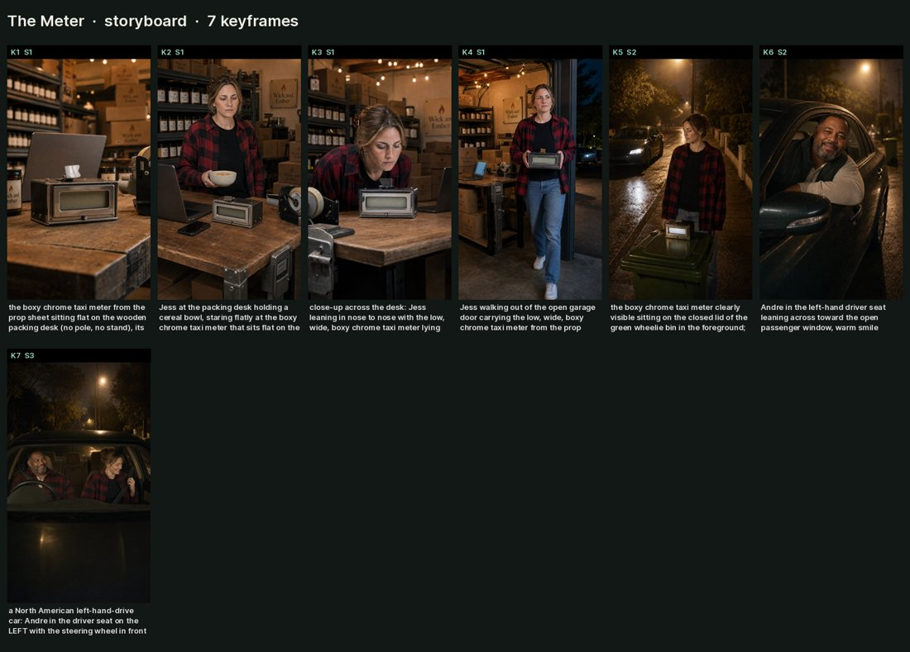
Generation units
M1: the garage
hook to the meter going out the door, brand-free
26 s, 2 takes, starts at 0 s
M2: the curb
the car arrives; send-based explained
7 s, 2 takes, starts at 26 s
M3: inside the car
brand line, deal teaser, free migration (short unit, several takes)
8 s, 4 takes, starts at 33 s
Keyframes

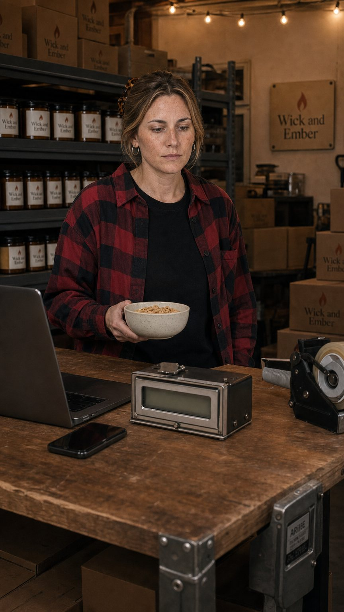
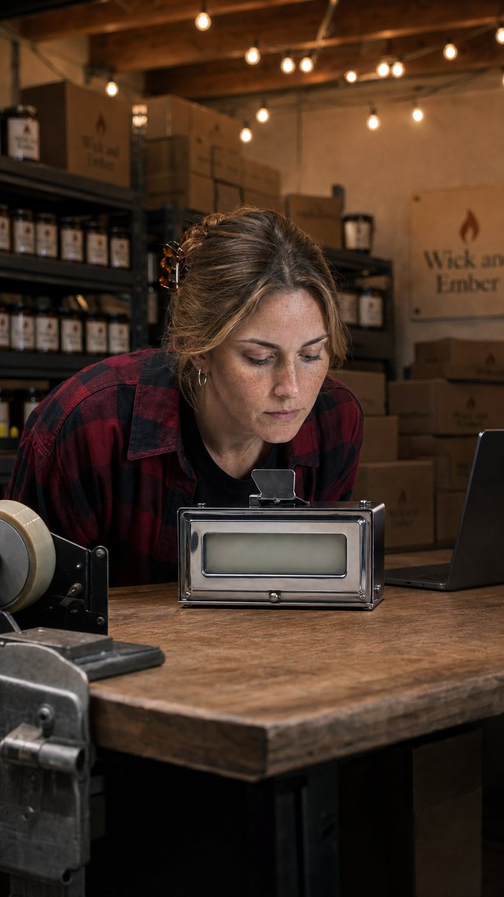
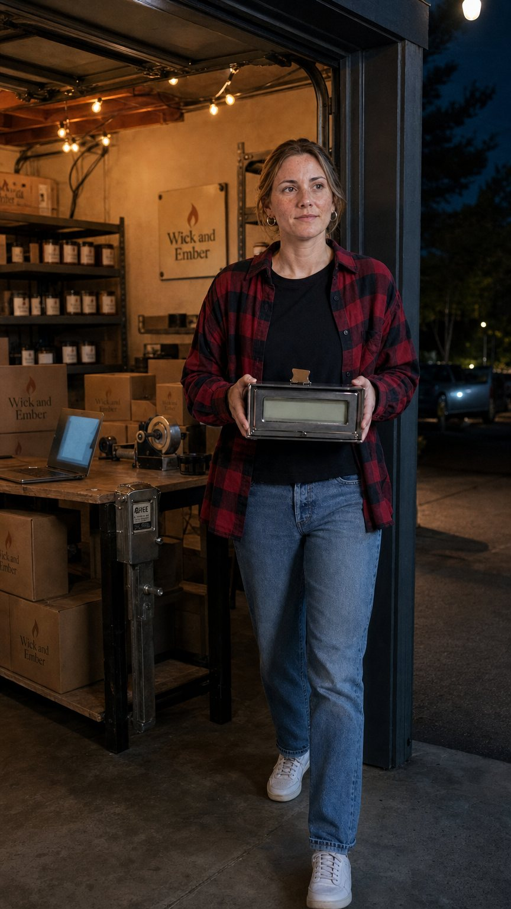
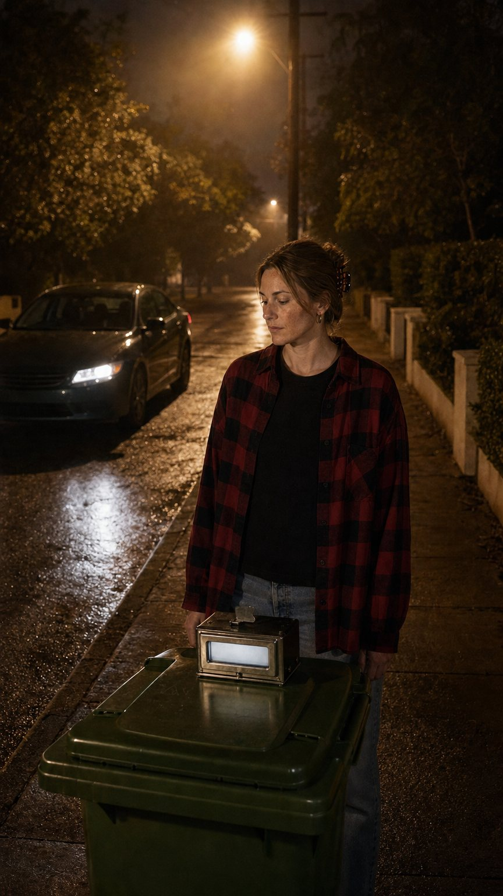
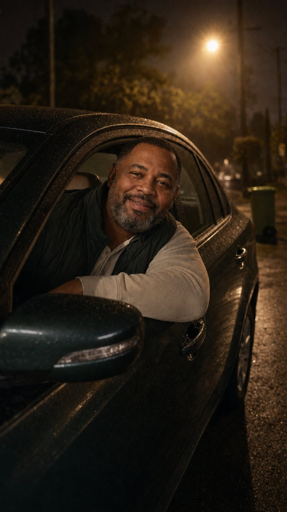
Dialogue, with delivery
| Time | Who | Line | Unit |
|---|---|---|---|
| 0.4 to 2.9s | Jess Calloway (on camera) | “Why is my email bill running like a cab?” flat, deadpan, slightly baffled | M1 |
| 4.0 to 6.2s | Jess Calloway (on camera) | “I'm not even sending anything.” mouth half full, flat, exasperated | M1 |
| 7.6 to 10.4s | Jess Calloway (on camera) | “Another one. Hasn't opened a thing since April.” reading her phone, dry, unimpressed | M1 |
| 11.6 to 13.6s | Jess Calloway (on camera) | “You're charging me for ghosts.” leaning in, quiet, accusing | M1 |
| 21.4 to 24.4s | Jess Calloway (on camera) | “Black Friday's coming. You're not.” carrying the meter out, cheerful, final | M1 |
| 27.0 to 30.6s | Andre (on camera) | “We charge when you send. Not for who's on your list.” warm, easy, matter of fact | M2 |
| 31.6 to 32.6s | Jess Calloway (on camera) | “And Black Friday?” curious, hopeful | M2 |
| 33.0 to 35.0s | Andre (on camera) | “Sign up now. Our best deal drops soon.” warm, a little conspiratorial | M3 |
| 35.8 to 38.4s | Andre (on camera) | “And we move you over free. Welcome to Bre-vo.” proud, warm, clear on the brand name | M3 |
| 39.0 to 40.6s | Jess Calloway (on camera) | “Bill me for the sends.” amused, satisfied, settling into the seat | M3 |
Motion graphics
| At | Template | Purpose | Sound |
|---|---|---|---|
| 8.2 | claim_card | why the meter ticks | silent |
| 28.0 | claim_card | the send-based reveal | silent |
| 36.0 | cta | in-world CTA lands: sign up now, deal revealed soon | silent |
| end | outro | Brevo end card: deal teaser + migration | silent |
Motion graphics (rendered, silent)
Built from the Brevo brand kit; placed in free space, never over a face. Stills shown on a dark background.

Sound
- native: garage hum, phone buzzes, curb ambience, car idle, seatbelt click, all from the takes
- added: the meter tick only, and only if the native take lacks it: the audience must register that the bill moves on every signup
- silent: every graphic (claim cards, CTA card, outro)
Music
- sections: A: sparse plucked deadpan groove under the garage (0 to 26 s), drops out for the curb beat; B: warm swell as the car arrives, carries through the CTA and into the outro without stopping
- bpm: 96
- ducking: under every line to about 0.5
Cast, locations and brand boards
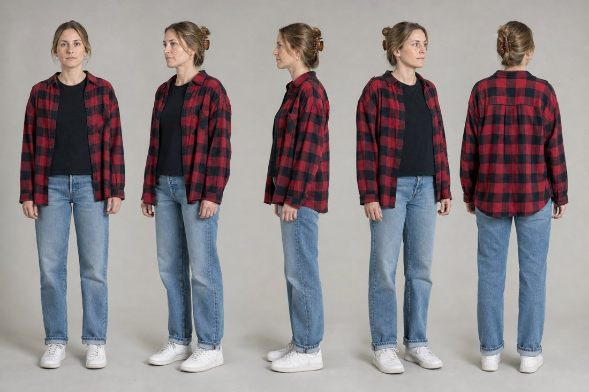
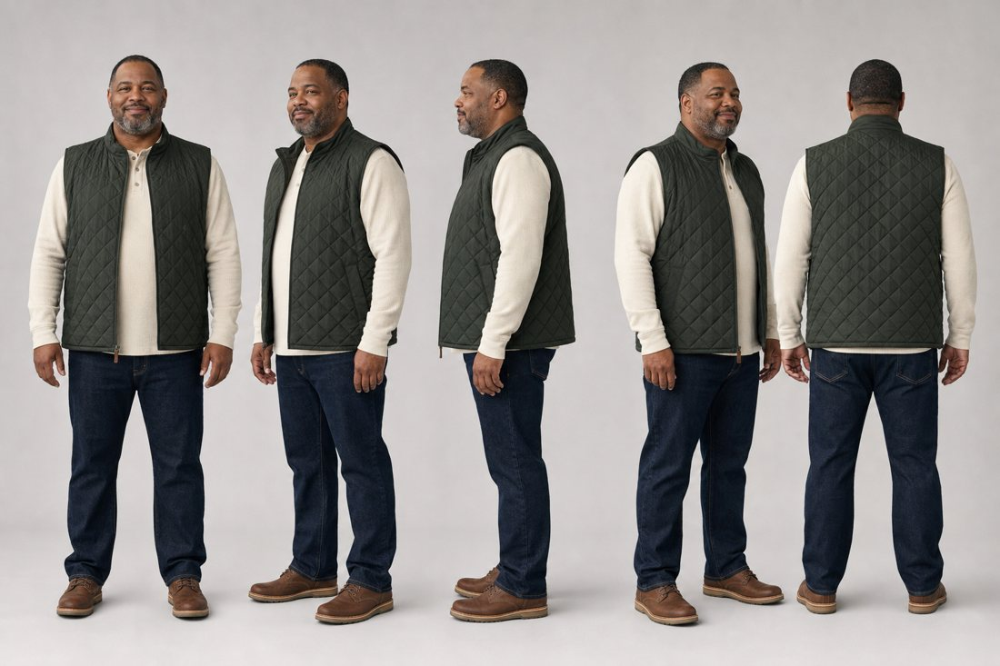
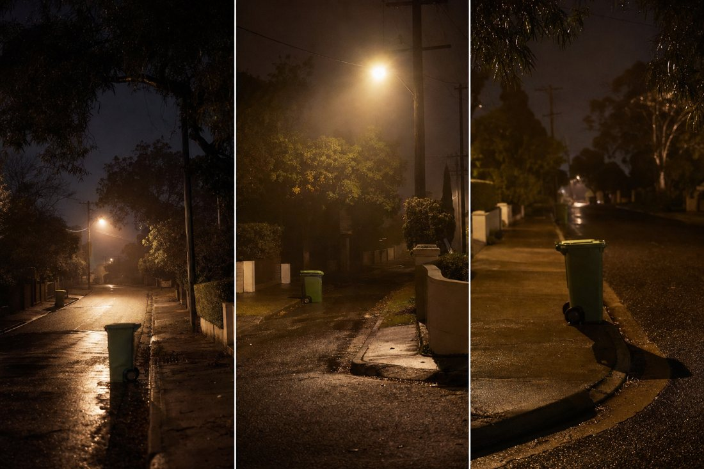
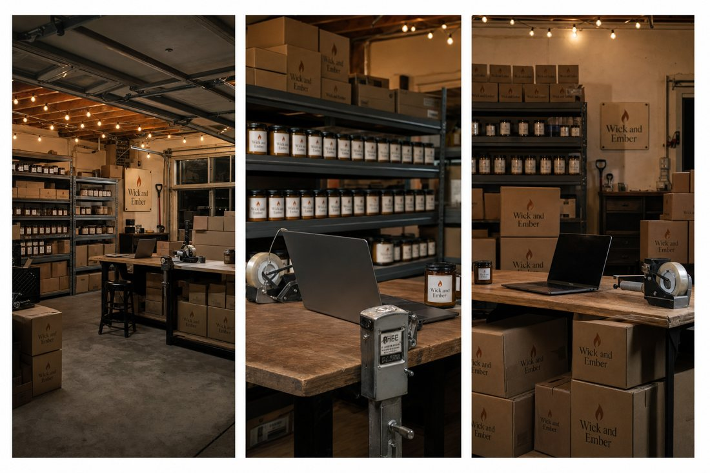
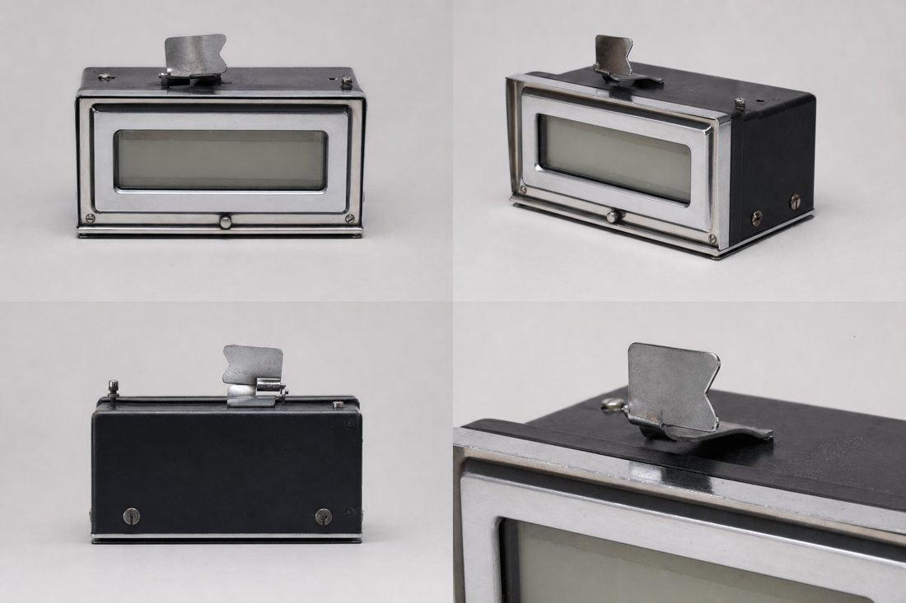
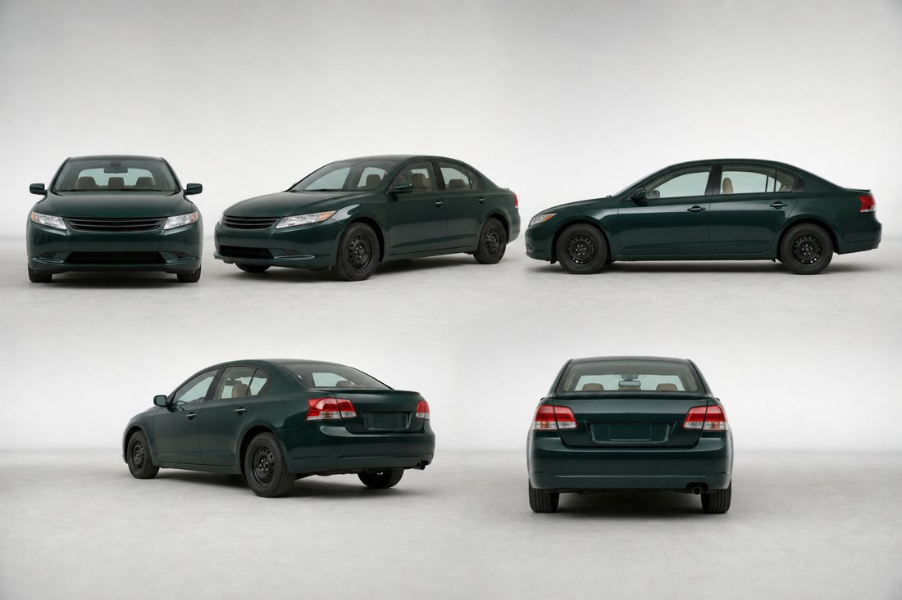